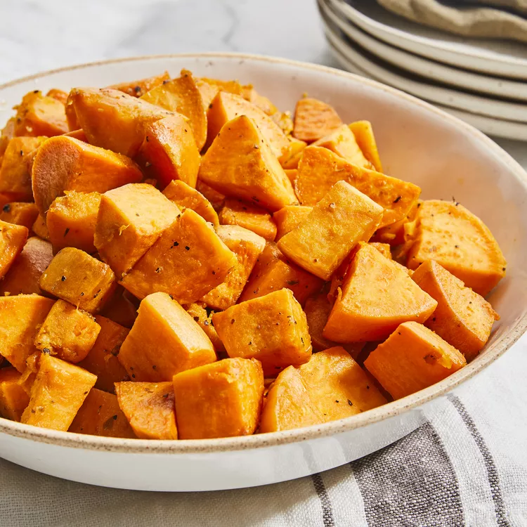

Baked Sweet Potatoes

Description
This baked sweet potato recipe is very easy, healthy, and tasty and makes a great addition to any meal.
Ingredients
- 2 tablespoons olive oil
- 3 large sweet potatoes
- 2 pinches dried oregano
- 2 pinches salt
- 2 pinches ground black pepper
Steps
- Preheat the oven to 350 degrees F (175 degrees C). Coat the bottom of a glass or nonstick baking dish with olive oil, just enough to coat.
- Reduce the heat and whisk in miso paste.
- Wash and peel sweet potatoes; cut into medium pieces. Place in the baking dish and stir to coat with olive oil. Sprinkle with oregano, salt, and pepper.
- Bake in the preheated oven until soft and fork-tender, about 1 hour.